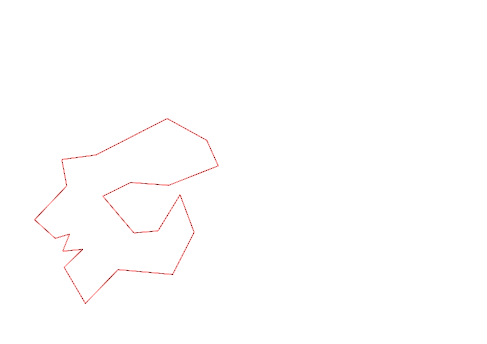
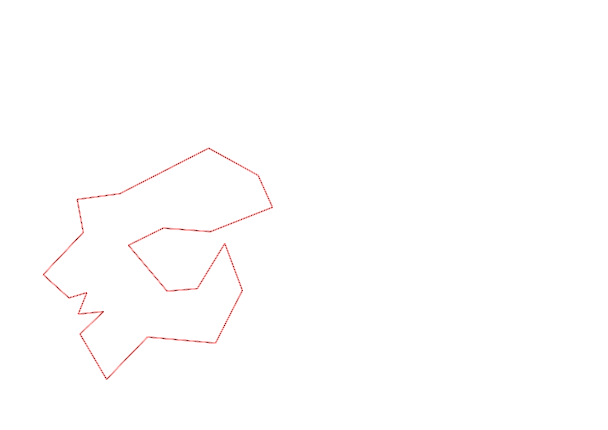

| Control |
Points |
Time Punched |
Distance |
Your Time |
Pace |
Place |
Fastest Time |
Median Time |
% Behind Fastest |
| 92 |
90 |
|
0.23 |
0:03:04 |
13:20 |
10 / 11 |
0:02:15 |
0:02:35 |
36% |
| 57 |
50 |
|
0.12 |
0:06:45 |
56:15 |
7 / 9 |
0:01:59 |
0:05:37 |
240% |
| 107 |
100 |
|
0.2 |
0:02:59 |
14:55 |
14 / 21 |
0:00:00 |
0:02:52 |
-% |
| 63 |
60 |
|
0.35 |
0:03:10 |
09:02 |
11 / 18 |
0:01:59 |
0:02:42 |
59% |
| 32 |
30 |
|
0.15 |
0:01:12 |
08:00 |
21 / 27 |
0:00:36 |
0:00:56 |
100% |
| 44 |
40 |
|
0.12 |
0:01:14 |
10:16 |
10 / 29 |
0:00:52 |
0:01:49 |
42% |
| 53 |
50 |
|
0.2 |
0:02:14 |
11:10 |
13 / 26 |
0:01:31 |
0:02:15 |
47% |
| 69 |
60 |
|
0.12 |
0:01:34 |
13:03 |
21 / 29 |
0:00:45 |
0:01:18 |
108% |
| 54 |
50 |
|
0.07 |
0:02:14 |
31:54 |
3 / 4 |
0:01:38 |
0:01:57 |
36% |
| 71 |
70 |
|
0.08 |
0:00:29 |
06:02 |
3 / 5 |
0:00:23 |
0:00:29 |
26% |
| 41 |
40 |
|
0.09 |
0:01:34 |
17:24 |
4 / 8 |
0:00:47 |
0:01:39 |
100% |
| 40 |
40 |
|
0.11 |
0:01:27 |
13:10 |
19 / 24 |
0:00:45 |
0:01:00 |
93% |
| 77 |
70 |
|
0.18 |
0:02:25 |
13:25 |
15 / 21 |
0:01:35 |
0:02:21 |
52% |
| 59 |
50 |
|
0.21 |
0:02:37 |
12:27 |
8 / 18 |
0:02:00 |
0:02:47 |
30% |
| 61 |
60 |
|
0.24 |
0:07:42 |
32:05 |
19 / 19 |
0:02:14 |
0:03:16 |
244% |
| 42 |
40 |
|
0.21 |
0:04:30 |
21:25 |
10 / 14 |
0:02:19 |
0:03:34 |
94% |
| 127 |
20 |
|
0.17 |
0:02:45 |
16:10 |
10 / 12 |
0:01:27 |
0:01:48 |
89% |
| 38 |
30 |
|
0.18 |
0:01:53 |
10:27 |
8 / 13 |
0:01:04 |
0:01:50 |
76% |
| 60 |
60 |
|
0.11 |
0:00:57 |
08:38 |
10 / 19 |
0:00:42 |
0:00:57 |
35% |
| 130 |
30 |
|
0.21 |
0:01:45 |
08:20 |
2 / 5 |
0:01:22 |
0:02:06 |
28% |
| 126 |
20 |
|
0.14 |
0:01:29 |
10:35 |
7 / 12 |
0:01:09 |
0:01:26 |
28% |
| Finish |
0 |
|
0.17 |
0:00:57 |
05:35 |
5 / 9 |
0:00:31 |
0:00:57 |
83% |
Total Distance Covered: 3.66km
Points Scored: 1060
Late Penalty: 0
Final Score: 1060
Total Time: 0hours 54minutes 56seconds
Efficiency: 289.62 points/km
 
